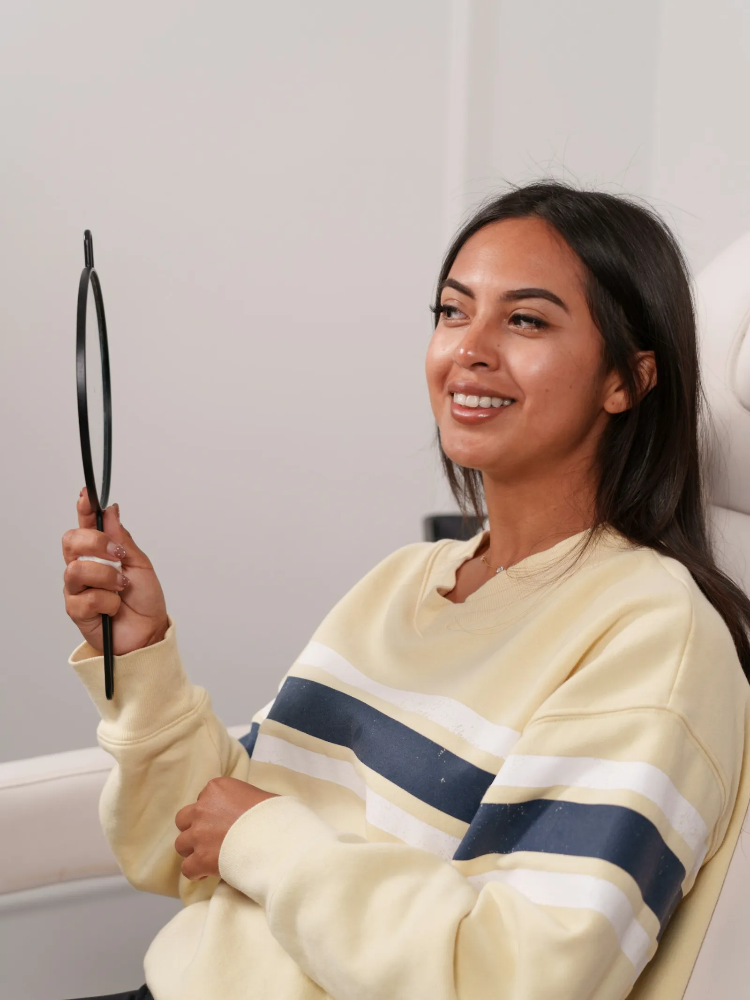

Kontroll és fogkő-eltávolítás
Évente egyszer-kétszer: átnézzük a fogakat, eltávolítjuk a fogkövet, és megmondjuk, kell-e bármi más.
Foglaljon időpontot online, akár este vagy hétvégén is: kiválasztja a kezelést és a szabad időpontot, mi pedig visszaigazoljuk.

MintaképNem kell rendelési időben telefonálni. Válassza ki, mi a gond, és a szabad időpontok közül azt, ami Önnek megfelel — mi visszaigazoljuk.
1 · Mi a gond?
2 · Nap és időpont
3 · Az Ön adatai
A kérés a rendelő naptárába kerül, Ön pedig e-mailben vagy telefonon visszaigazolást kap. Ez a látványterv nem küld el semmit.
A pontos lista a rendelővel egyeztetve kerül fel — itt a leggyakoribbak.
Évente egyszer-kétszer: átnézzük a fogakat, eltávolítjuk a fogkövet, és megmondjuk, kell-e bármi más.
Fogszínű tömőanyaggal, hogy ne látsszon. A kezelés előtt elmondjuk, mire számíthat.
Ha a fog belseje gyulladt, a gyökérkezeléssel a fog megmenthető.
Korona, híd, kivehető pótlás. Úgy tervezzük meg, hogy kényelmes legyen és természetesen nézzen ki.
Rendelői fehérítés vagy otthoni sín. Előtte megnézzük, melyik illik Önhöz.
Ha már nem menthető a fog. Érzéstelenítéssel, utána pontos tanácsokkal.
Nem kell telefonálni rendelési időben: online kiválasztja a szabad időpontot.
Megnézzük a fogakat, és érthetően elmondjuk, mi a teendő és mennyibe kerül.
Csak akkor kezdünk bele, ha mindent értett és rábólintott.
A térkép a Google-től töltődik be, csak ha rákattint.